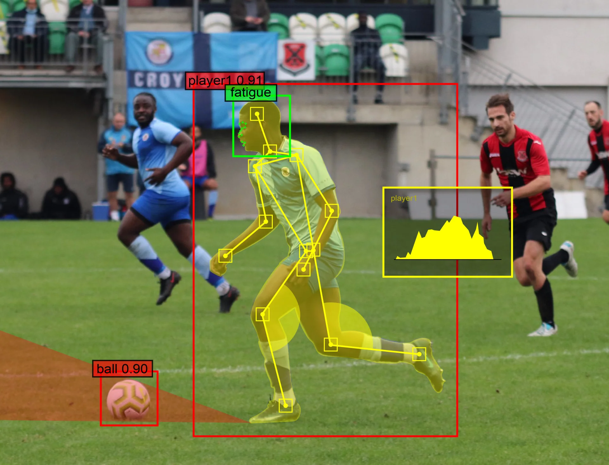
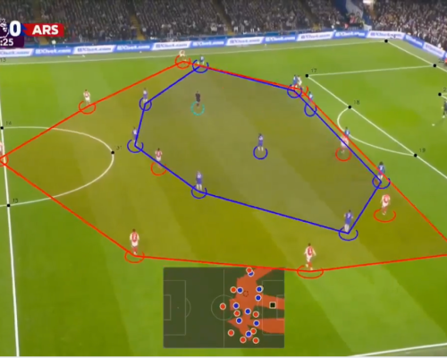
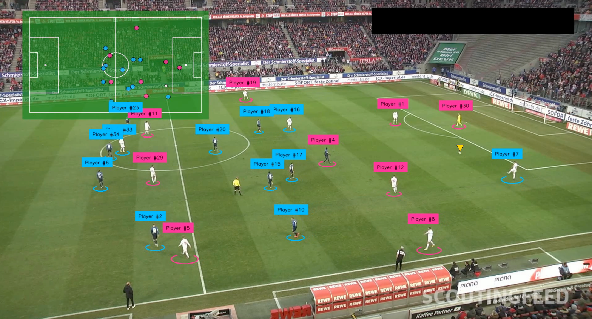

Computer Vision & Player Tracking in Football
From Pixels to Tactical Data
1. Short overview
Computer vision is the field of AI that teaches machines to understand images and video, through recognition, reconstruction and reorganization. A model learns from labelled and augmented data, and a CNN extracts features layer by layer. It covers tasks such as classification, object detection, segmentation and tracking, and its history runs from experiments on cats in the 1950s to ImageNet (2009) and AlexNet (2012). Applications range from cashierless stores and virtual try-on to football, where FIFA's semi-automated offside technology (SAOT) tracks the ball and players with 16 cameras.
2. Fuller summary
Definition and the 3 R
Computer vision is a subfield of AI that equips machines to process, analyse and interpret visual inputs such as images and videos, using machine learning to derive meaningful information. It is pictured as three processes that inform each other. Recognition identifies actions, objects, people, places and writing. Reconstruction derives the three-dimensional characteristics of those entities. Reorganization infers the relationships between them. (IBM)
How it works
The workflow starts with data gathering: images or videos must be collected and labelled, for example chest X-rays marked normal or pneumonia. Preprocessing then cleans and enhances the data, and data augmentation, such as rotating or flipping images, expands the dataset. Next comes model selection (CNNs for images, RNNs for sequences such as video frames, vision transformers as a growing alternative), then training. Training runs a forward pass, measures the error with a loss function, applies backpropagation to compute the gradient of the loss for each weight, and uses gradient descent to update the weights. (IBM)
A CNN has three kinds of layers. The convolutional layer extracts features such as colours, edges, shapes and textures by sliding a filter over the pixel matrix. The pooling layer shrinks the feature map and keeps the essential features. The fully connected layer classifies, giving a probability for each class. (IBM)
Main tasks
- Image classification: assigns an image to a predefined class.
- Object detection: locates objects with bounding boxes and classifies them. R-CNN works in two stages; YOLO works in a single pass and is fast enough for real time.
- Image segmentation: pixel-level version of detection (semantic, instance, panoptic).
- Object tracking: follows an object across frames and keeps its continuity.
- Pose estimation: gauges the position of body parts to recognise gestures and track movement.
- Facial recognition: applies image recognition to facial geometry, for example to unlock a phone.
- OCR: converts text in images into machine-readable text.
(IBM)

History
In the 1950s and 1960s, neurophysiologists showed cats arrays of images while recording neural activity and found that the animals responded first to lines, so image processing starts with simple shapes. Around then, the first image scanning technology appeared. In 1982, David Marr showed that vision is hierarchical, and Kunihiko Fukushima developed the neocognitron, which included convolutional layers. By 2000 the focus was image classification and object recognition. The ImageNet dataset appeared in 2009, and in 2012 a University of Toronto team created AlexNet, a CNN trained on ImageNet that significantly reduced the error rate. (IBM)
Applications and case study
Amazon's Just Walk Out technology uses computer vision to track what customers pick, so they can leave without queuing at a till. Online stores combine augmented reality, face recognition and pose estimation for virtual try-on of clothes, eyewear or makeup. Other uses include agriculture, autonomous vehicles, healthcare, manufacturing, robotics and space exploration. (IBM)
Football case: SAOT. With video assistant referees, offside became hard to judge because it depends on the exact moment the ball is played and on the positions of the second-to-last defender and the attacker. FIFA's system uses 16 dedicated cameras to track the ball and players, typically 50 times per second, with 29 data points per player in each frame; ball data comes from optical tracking and, where available, a connected-ball sensor. When an attacker who was offside at the moment of the pass receives the ball, the system alerts the VARs, who review the decision before it reaches the on-field officials. Advanced SAOT also sends an audio signal to on-field officials for clear offsides. A 3D animation built from the same data shows the decision to fans. (FIFA)
The same logic works at amateur level with a simpler chain: detection, tracking, team assignment, pitch calibration (a homography that maps pixels to metres), then analytics. Its limits are occlusion, camera angle, the small and often hidden ball, and video quality. (Coaching guide) An open-source version of this idea was built in one month from Roboflow's tutorials and exports tracking data in the Metrica CSV standard. (Roboflow article) For comparison, goal-line technology uses seven cameras at each end and betters the FIFA margin of error of 3 cm. (Hawk-Eye, Premier League)


3. Short overview (Key words)
- Computer vision: machines understand images and video
- 3 R: recognition → reconstruction → reorganization
- Labelled data → augmentation → model → training
- CNN: convolution → pooling → fully connected
- Tasks: classification, detection (YOLO, R-CNN), segmentation, tracking, pose, faces, OCR
- History: 1950s cats → 2009 ImageNet → 2012 AlexNet
- Applications: Just Walk Out, virtual try-on
- Case study: SAOT, 16 cameras, 50 times per second
4. Fuller summary (Key words)
Definition and the 3 R
- Subfield of AI: process, analyse, interpret images and video
- Recognition → objects, people, places, writing
- Reconstruction → 3D characteristics
- Reorganization → relationships between entities
How it works
- Data gathering → labelled images
- Preprocessing → cleaning, brightness, resizing
- Augmentation → rotate, flip
- Model selection → CNN, RNN, ViT
- Training → forward pass → loss → backpropagation → gradient descent
- CNN layers → convolution (colours, edges, shapes, textures) → pooling → fully connected (probabilities)
Main tasks
- Classification → one label per image
- Detection → bounding boxes; R-CNN (two stages), YOLO (one pass, real time)
- Segmentation → pixel level
- Tracking → same object across frames
- Pose estimation → body parts, gestures
- Facial recognition → facial geometry
- OCR → text in images
History
- 1950s to 1960s → cats respond to lines first
- 1982 → Marr (hierarchy), Fukushima (neocognitron)
- 2000 → classification and recognition
- 2009 → ImageNet
- 2012 → AlexNet (Toronto), lower error rate
Applications and case study
- Amazon Just Walk Out → no checkout
- Virtual try-on → AR + face recognition + pose estimation
- SAOT → 16 cameras, 50 times per second, 29 data points per player
- VAR reviews → advanced SAOT sends audio signal to officials
- Amateur chain → detection → tracking → teams → calibration → analytics
- Limits → occlusion, camera angle, ball, video quality
- Goal line → 7 cameras per end, better than 3 cm